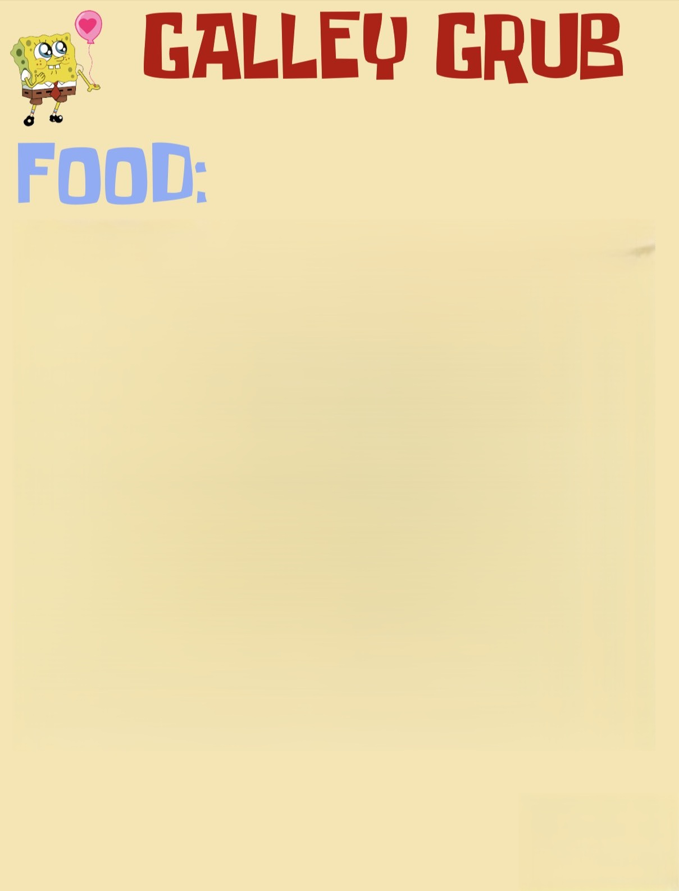

üçî F≈ë√©telek:
Dupla Rákburger - Még több minden, dupla adag tengeri ízzel!
Rákburger Deluxe - Extra saláta, tengeri sajt, csípős medúzazselével.
Nyers Polip Wrap - Friss polipszeletek tengeri algába tekerve.
üçü K√∂retek:
Mini tengeri uborka falatok - Ropogós, és egy kicsit nyálkás.